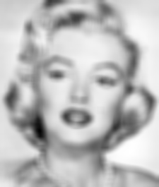

CSC 589 AU / Homework 3 / Image Filtering and Hybrid Images
Is it REALLY just a cat?
This was definitely one of the more challenging problem sets that was assigned.
There are several things that still require tuning that I hope to return back to this
project to complete. Find the Github repository of the code here.
Please click on yan_shi_ps3 to find the code.
TODO
- Convolve using a separable gaussian filter. Right now, the program runs for quite a bit of processing time. Separable filters would fix that.
- Include an applet of some kind on the website! This would require some JavaScrip or a way to render python scripts.
The goal of the project was to create and implement my_imfilter.py which involved coding our
own convolution2d function, a gaussian kernel function, a low pass (blur) function, and a high pass (sharpen) function.
We would then use these functions to create a hybrid image, an image that contains the low-pass frequencies
of one image and the high-pass frequences of another image. This image is an optical illusion: we are able
to see the high pass image from up close but unable to see the low pass image until we are far away enough in distance.
The most difficult part of the setup was the convolution function and the gaussian kernel function. The other
two functions relied on convolution and the kernel, so those were not challenges.
Functions and Algorithms
The functions were given to us and algorithms were based off of the readings in Richard Szeliski's book and in the research article Hybrid Images (Olivia, Torralba, and Schyns). We focus primarily on the standard deeviation of the gaussian filter, σ and alpha for the high-pass function in order to determine the best way render the hybridized image. The hybrid image is the sum of the high-pass frequencies of one image and the low-pass frequencies of another image. There was a cut-off frequency that we had to keep in mind in order to properly hybridize the two images together. NOTE: Because of the nature of convolution and the current implementation that I have, the runtime for the program itself can reach up to a minute given the size of the images. So please be patient if you are running the program at all.
Convolution and Kernels
I reviewed convolution and attempted padding. In this case, we added constant padding while we checked through the rows and columns. We had a region of interest (the size of the kernel + where the kernel on the image's matrices). These regions of interest would then calculate the sum of the region and place that number where the row and column location was in the output. The kernels were calculated based on a given sigma; the size of the kernels were determined by primarily the row number of the image itself. We then utilized this following piece of code to emulate the Gaussian equation:
np.exp(-1.0 * ((X - center_x)**2. + (Y-center_y)**2.) / (2. * sigma**2.))High Pass and Low Pass
high_pass() and low_pass() required one argument each: the image. The functions relied on the convolve2d
and gaussian_kernel_2d in order for the two to function. It was interesting to try and make it so that the sharpening and blurring
could be customizable. Sharpening is controlled by alpha, which is stated in the code, and blurring is stated as sigma.
Results
For the first discussion of the results, I will display both the gray scale and color versions of the hybrid images.
Cat & Dog
Original


|
Grayscale


|
Color

|
The high-pass image here was the cat and the low pass iamge was the dog.
Some notable things: alpha=10 for the high_pass filter and sigma=5 for the low_pass filter. I kept the blurring for
the high pass to 1. Interestingly enough, I had tried this the other way around, i.e. the high-pass image was now the dog and the low-pass image
was now the cat.

|
... This actually doesn't work, no matter how much you adjust the sigma and alpha. I kept them the same here and was unable to achieve a satisfactory result.
Bird & Plane


|
This didn't work as nicely as the cat and dog one, but the idea is similar here. The high pass image was the bird and the low pass image was the plane. The sigma was kept at 5 and the alpha was kept at a 10. The conditions were kept the same from the last hybridization.
Marilyn & Einstein
Original


|
Hybrid


|
This one was more of a success than others! The high pass image was Albert Einstein and the low-pass image is Marilyn Monroe. The alpha for the high-pass image was 5 and the low-pass image's sigma was set to 5 as well. The sigma in the blurring process for the sharpening was set to 1. It's interesting as these two required the same alpha and sigma, versus the other two that required at least half of each other.
Fish & Submarine
Original


|
Motorcycle & Bicycle
Original


|
For Fun
Final Thoughts
This was, overall, a successful and fun project. However, with more time, I can definitely finess the project and meet the other criteria marks. Unfortunately, with current time constraints, I was unable to get to allow for color and allowing for an arbitrary kernel. Nonetheless, the results and experimentation that I discovered along the way gives me insight for a better iteration of this project in the near future.
Overall, it appeared to be that the frequency cut off for most things was from about 5-10. Anything higher would cause the images to look out of sync and unnatural. There could not be too much sharpening or blurring or else one would dominate the other. The striking of balance was necessary and that meant fiddling around with the sigma and the alpha to determine what worked best. If I had to do this again, I think I would rather work in the Fourier space than the spatial space, as the spatial space doesn't allow for that dramatic of a change in terms of sharpening—as that was my biggest issue.
Thank you for reading!